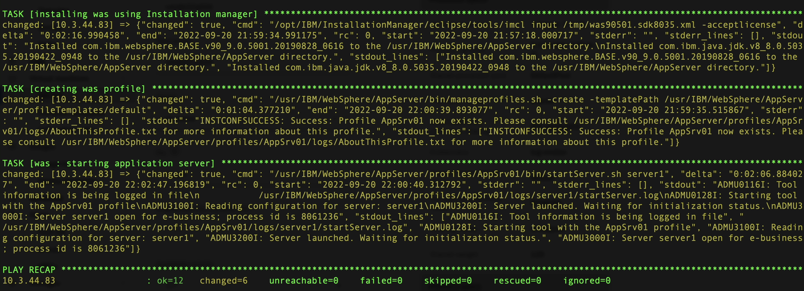
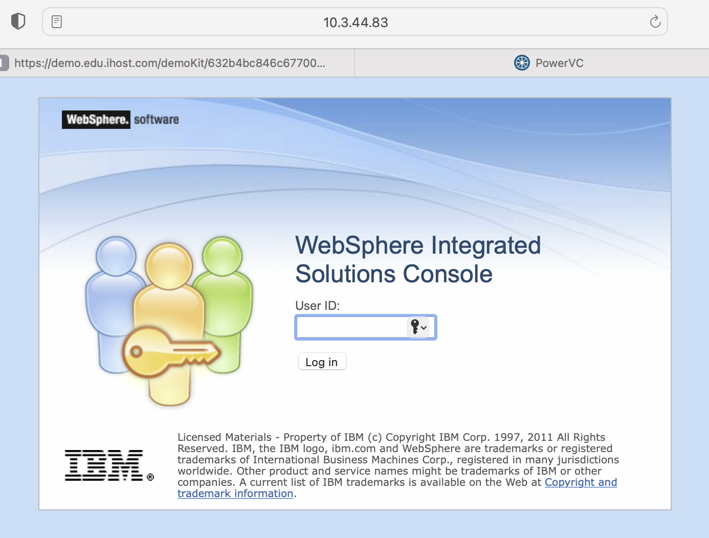

Ways to watch
In addition to the embedded video, IBMers and Business Partners can also download the recording from Seismic.
Further modifications to the primary Playbook are required to complete the installation of WAS, generate the necessary profiles, and fully launch the software.
Once again, edit the Playbook YAML manifest.
main.yml
Technical Sellers: Extend the YAML file as you have done previously so that the final version matches the template documented below.
Sellers: As you are working from a completed YAML file that was cloned from the Git repository, you do not need to make any modifications to the file.
The finalized Playbook should exactly mirror the following template:
---
- name: Creating staging directory
file:
path: /tmp/im
state: directory
- name: copying IM source files
unarchive:
src: /files/aix/websphere/InstallationManager/1.8.9.4/aix.gtk.ppc_1.8.9004.20190423_2015.zip
dest: /tmp/im
creates: /tmp/im/userinstc.ini
- name: installing installation manager
shell: /tmp/im/installc -log /tmp/im.lof -acceptLicense
- name: uploading was installation response file
template:
src: templates/was90501.sdk8035.xml
dest: /tmp/was90501.sdk8035.xml
- name: Creating wasrepo directory
file:
path: "{{was_repo}}"
state: directory
- name: copying binaries to wasrepo
copy:
src: "{{item}}"
dest: "{{was_repo}}"
loop:
- "{{was_90501_source_dir}}{{was_90501_file}}"
- "{{sdk_8035_source_dir}}{{sdk_8035_file}}"
- name: installing was using Installation manager
shell: /opt/IBM/InstallationManager/eclipse/tools/imcl input /tmp/was90501.sdk8035.xml -acceptlicense
tags: template
- name: creating was profile
shell: /usr/IBM/WebSphere/AppServer/bin/manageprofiles.sh -create -templatePath /usr/IBM/WebSphere/AppServer/profileTemplates/default
tags: template
- name: starting application server
shell: /usr/IBM/WebSphere/AppServer/profiles/AppSrv01/bin/startServer.sh server1
tags: template
When satisfied, press ESC and :x and Return to save and exit the YAML file.
Finally, execute the completed Playbook.
Sellers and Technical Sellers
This step must be performed by both Sellers and Technical Sellers.
Wait until the Playbook has finished executing and the "PLAY RECAP" has been printed to screen within the Terminal console. Successful execution of the full Playbook may take several minutes to complete. If all jobs have successfully been executed (with status as "OK"), then WebSphere Application Server should now be successfully installed on the AIX LPAR and the services now live for you to interact with!

Test that WebSphere Application Server is now online by visiting the following address with your Web browser:
Host Address
Substitute the missing variables with the IP address of your AIX LPAR (this is the address summarized just below the PLAY RECAP in the screenshot above) — remember to use the address unique to your environment. Ensure that you are connected to OpenVPN tunnel used earlier before attempting to access the WAS service.

You may input any userID that you wish and then click Log In (remember that we disabled authentication in an earlier step) to access the WAS dashboard.
Congratulations — you have successfully installed and deployed a WebSphere Application Server environment on PowerVC entirely using Red Hat Ansible Automation Platform!
Business Partners
Keep your browser window open to the WAS dashboard. The following series of questions will be repeated on your L3 accreditation quiz. Use this time to investigate the various areas of the WAS dashboard so that you can prepare for the quiz and quickly certify your completion of this hands-on material.
IBM Sellers and Technical Sellers
Begin planning how you wish to present and record your Stand & Deliver. Replicate the steps and lessons learned throughout this hands-on material and ensure that your recording meets all of the evaluation criteria outlined in the Stand & Deliver requirements.